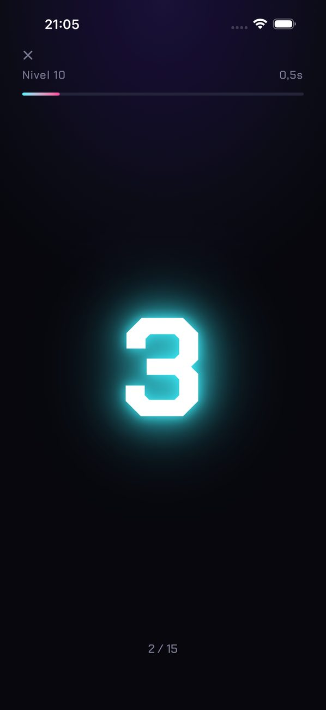
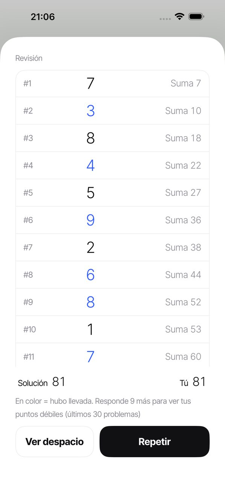
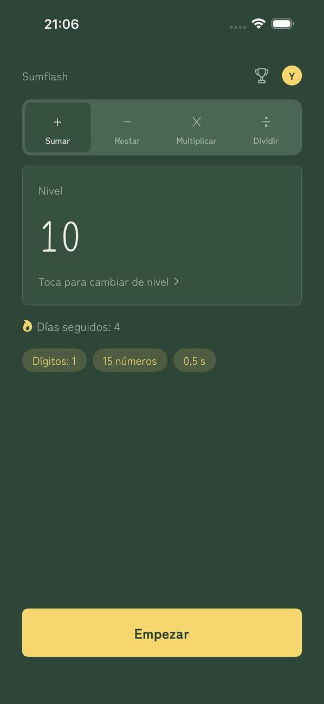

SUMFLASH
Los números pasan volando. Súmalos de cabeza.
Los números aparecen de uno en uno, cada uno solo un instante. Introduce el total. Es el cálculo mental flash, tal como se practica con el soroban (el ábaco japonés).
Descargar en el App StoreDescubre por qué fallaste
Después de cada respuesta, revisa todos los números que aparecieron junto con el total parcial en ese momento. Los números en los que hubo una llevada se destacan en color, para que veas exactamente dónde te equivocaste. Repite el mismo problema o vuelve a verlo despacio.
Cómo funciona
- Toca EmpezarLos números aparecen de uno en uno.
- Introduce el totalEscribe tu respuesta en el teclado numérico.
- Resultado y revisiónMira los números y los totales parciales para ver dónde te equivocaste.
Pantallas



Funciones
- Elige entre 30 niveles (de 1 dígito × 3 números × 1 s hasta 3 dígitos × 15 números × 0,5 s)
- Elige tú la velocidad, entre 0,2 y 5,0 segundos
- Tu racha en la pantalla de inicio. Si fallas un día por semana, la racha sigue viva
- Un recordatorio diario a la hora que elijas (no suena los días que ya has practicado)
- Los números simplemente aparecen y desaparecen, sin animaciones que estorben
- Cinco temas (Minimalista / Washi / Neón / Pizarra / Sakura)
- Perfiles separados para cada miembro de la familia
- Clasificatoria (1 dígito × 10) con clasificaciones de Game Center
- Elige sumar, restar (sumas y restas mezcladas), multiplicar o dividir en las pestañas de la pantalla de inicio. Cada operación tiene sus propios 30 niveles
- Lectura de los números en voz alta
- Tus datos de práctica se quedan en tu dispositivo (si has iniciado sesión en Game Center, solo tu mejor tiempo en la clasificatoria se envía a Apple para la clasificación). No hace falta crear una cuenta
Premium
Sin anuncios. Suscripción mensual de renovación automática. Cancela cuando quieras en Ajustes › Apple ID › Suscripciones del iPhone. Premium solo quita los anuncios. Todas las demás funciones son gratis.
Sobre los anuncios
Los anuncios aparecen en la parte inferior de la pantalla de inicio y entre series. No hay anuncios mientras aparecen los números, mientras introduces tu respuesta ni mientras revisas. Con Premium no hay anuncios.